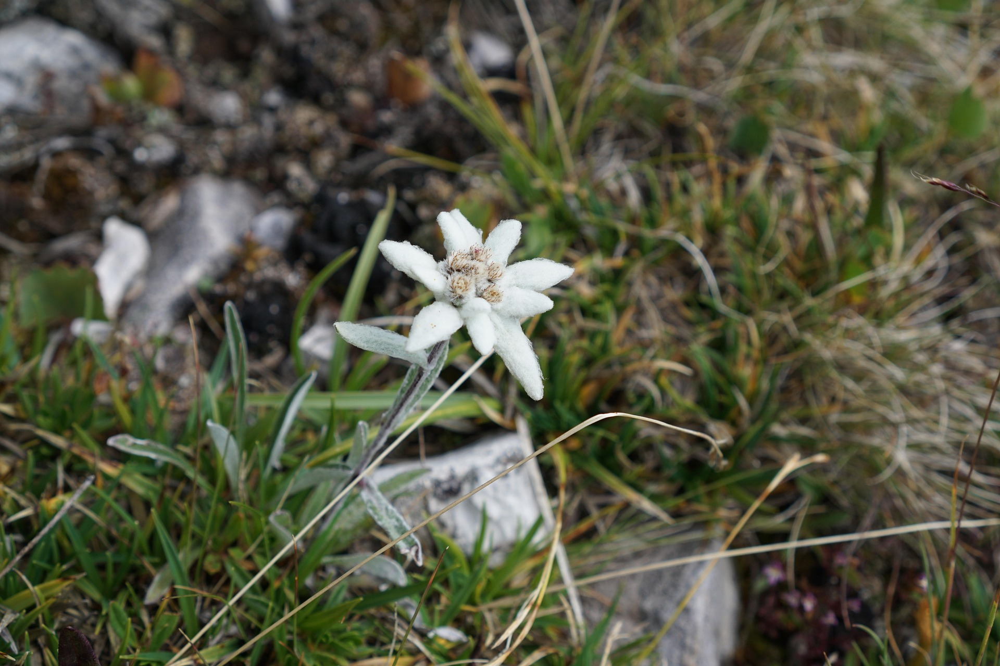
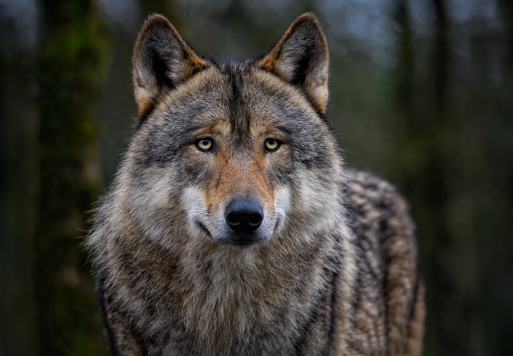
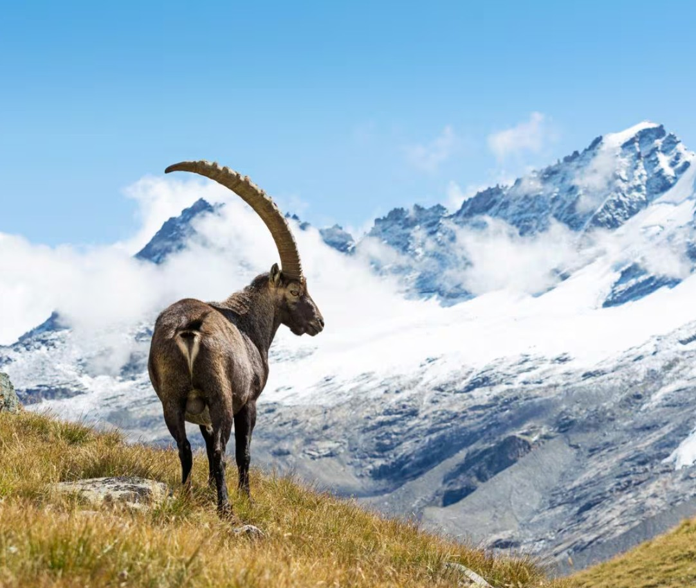

Il Parco dell’Etna offre una biodiversità sorprendente, nonostante l’asprezza del terreno vulcanico.

Dolomiti
Le Dolomiti Bellunesi sono un paradiso di biodiversità. Tra i prati alpini fiorisce la stella alpina, simbolo delle montagne, accompagnata da genziane e gigli.

Pollino
Il Parco Nazionale del Pollino è noto per il suo simbolo botanico, il pino loricato, che si erge maestoso sulle rocce calcaree.

Gran Paradiso
Il Parco Nazionale del Gran Paradiso ospita una straordinaria varietà di fauna alpina.